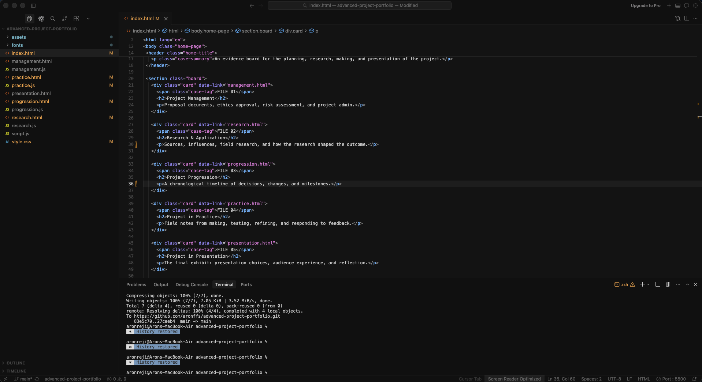

HTML // THE FOUNDATION
This is the digital filing cabinet. HTML provides the structural 'bones' of the site. I had to learn how to organize the content so the browser actually understands what is a heading, what is a button, and what is classified text. Without this, the archive would just be an unreadable pile of data.
